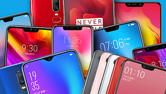
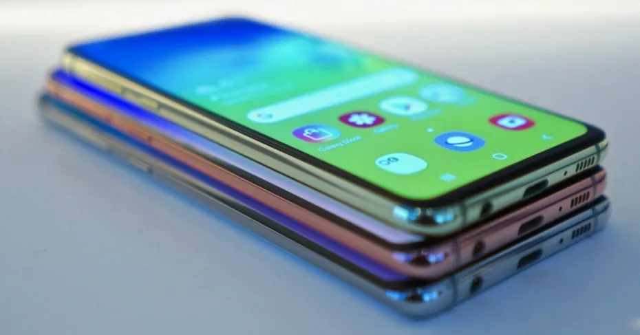
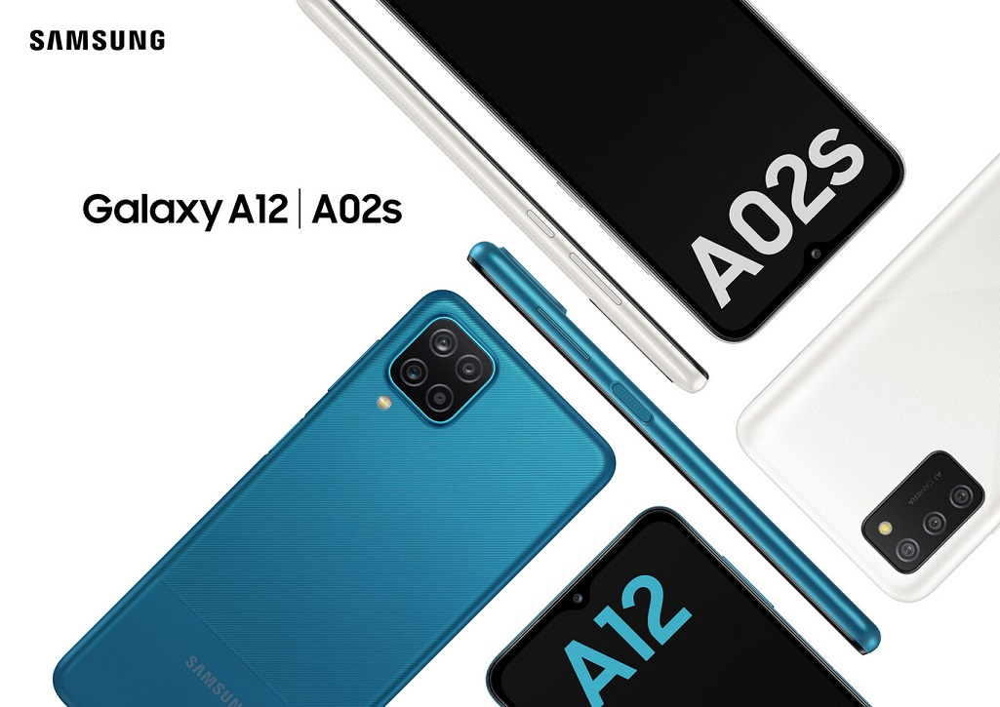
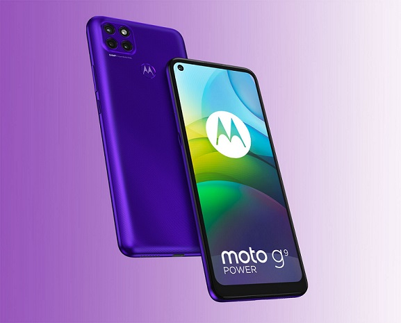
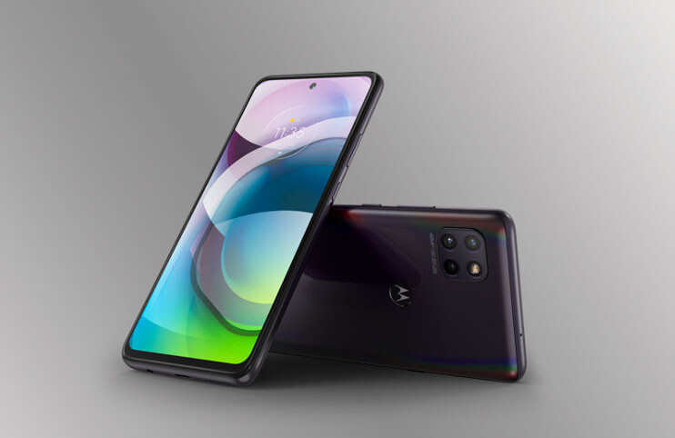
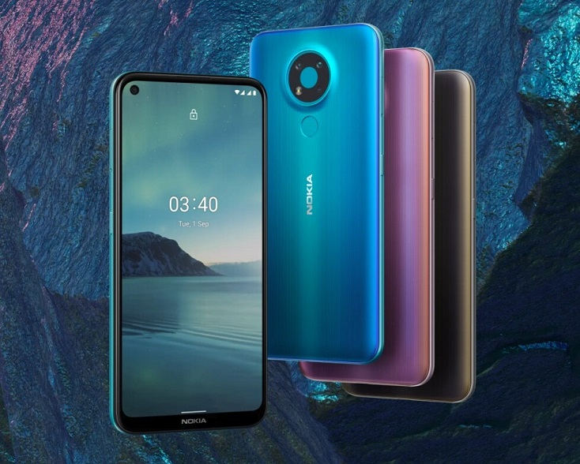
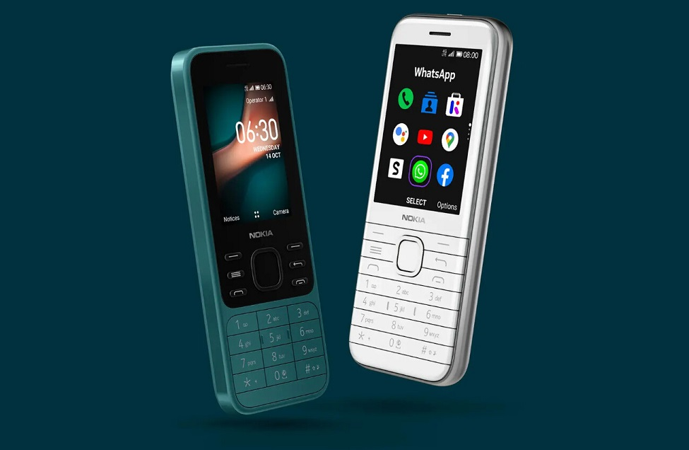

Noticias sobre móviles

Noticias de Samsungs

Fotografía de un Samgsung Galaxy S10
AMD y Samsung Electronics acaban de anunciar un acuerdo comercial por el
que
el primero licenciará...Leer más

Fotografía de un Samsung Galaxy A12 y A02s
Samsung empieza a mostrar sus cartas para el 2021...Leer
más
Noticias de Motorolas

Fotografía de un Motorola 9G
Lo que nos llamó la atención del Moto G9 Plus era su...Leer más

Fotografía de un Moto G 5G
Día de estrenos para Motorola y de que vaya completando sus familias de...Leer más
Noticias de Nokias

Fotografía de un Nokia 3.4 y Nokia 2.4
Cuando un usuario busca un móvil económico, en ocasiones...Leer más

Fotografía de un Nokia 6300 4G y Nokia 8000 4G
HMD Global, la empresa detrás de la marca Nokia, lleva tiempo...Leer más